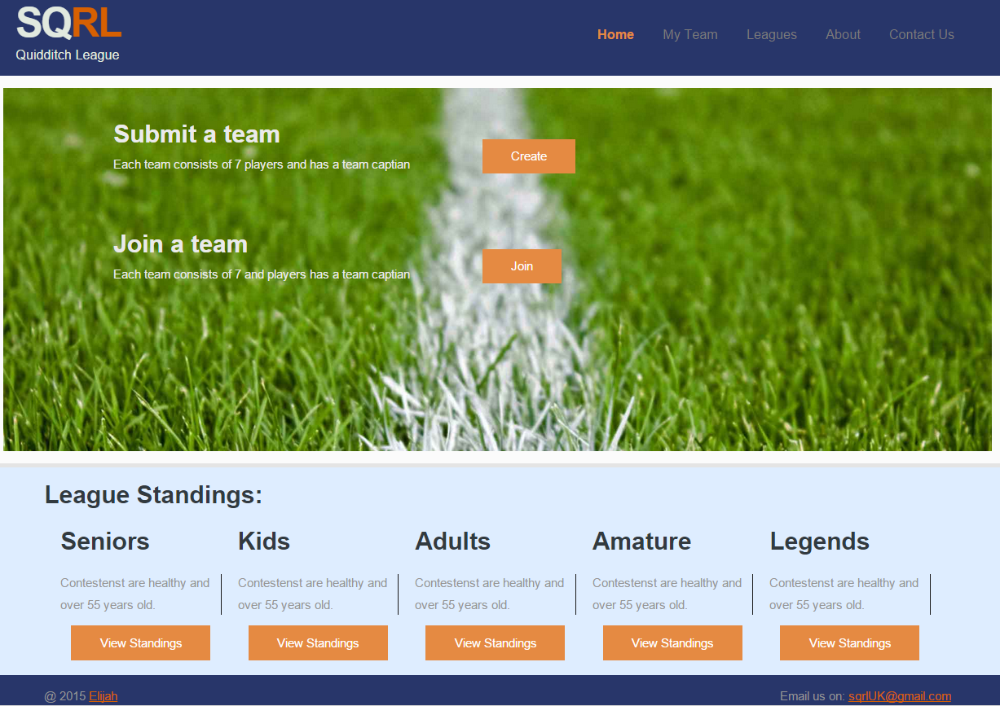
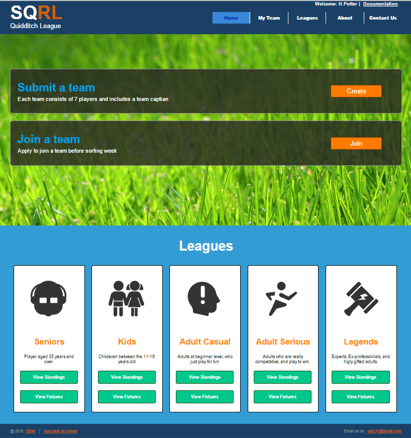

I choose to use “font: … Arial, Helvetica, sans-serif ..” through the whole website but with differing styles and colours with respect to the context of the text. I choose this font style as it is quite clean with no font tail or flicks which makes it easier to read and the rounded flat text flows well with the rounded boarders and lines used in the body of the webpages.
Assumptions
For the
purposes of this assignment, assuming the user has already
logged/signed-in, the user can only complete the task of finding
his/her teams ranking as illustrated in the HTA, by viewing the
standings for the ‘Adult Casual League’.
Assuming the user
the user chooses division different to their current division when
they are viewing league standings, the website will work correctly
Assuming the user is not colour blind I think my website would be
well designed and aesthetically pleasing.
Limitations
I
would have liked to use some JavaScript libraries or other frameworks
to create a more effective, responsive, interactive, well designed,
engaging and pleasant user experience but I discovered the due to the
constraints of time, and some other factors, including some
assignment specification. Due to this I was unable implement them,
especially JavaScript, since I did not learn it well enough in order
for me to implement it in my assignment. For example if I wanted to
be able to create a form to create or join a team and then validate
and display the data in a well-structured format so that the user can
review the enter information more clearly, I couldn’t as I did not
understand it well enough to use it in my assignment, therefore I
decided to focus more on the design aspect of this assignment.
Some
other limitations beginning this assignment with very little prior
experience meant that I spent a lot of time trying to find out how I
could implement my design decision, changing my design from my
prototype. I was also difficult to get the layout and positioning of
elements and I found myself fiddling around with alignments, margins
and paddings for a long time, probably longer than I had to.
Helped me learn html and CSS- http://www.w3schools.com/cssref/pr_font_font.asp
Tables - http://www.w3schools.com/html/tryit.asp?filename=tryhtml_table_id2
Colour
scheme -
http://colorschemedesigner.com/csd-3.5/#3t61PRR..yKtI0V3--4ZC--
helped me choose a good colour scheme.
Helped
me find good icons to describe my league levels -
https://cdnd.icons8.com/
The following were the icons retrieved:
Adult casual image -
http://www.wrnw.ca/wp-content/uploads/SafetyTipsSeniors.png
Adult
Serous image - https://icons8.com/web-app/for/all/sports%20mode
Kids
image -
https://cdnd.icons8.com/wp-content/uploads/2014/10/children.png
Legends image - https://icons8.com/web-app/for/all/hammer
Adult Casual icon - https://icons8.com/web-app/for/all/beginners
Helped me find team names - https://answers.yahoo.com/question/index?qid=20120212174516AA9ODsr , http://harrypotter.wikia.com/wiki/Category:Quidditch_teams
The
following websites helped me find good website design ideas
Inspirations for designs, colour schemes:
http://dunked.com/
http://modernthemes.net/demo/sensiblewp/
http://demo.wpmultiverse.com/newsted/
http://coolhomepages.com/design-ideas-detail.html?id=12777
From
the usability test with one of my peers, I have found that the
navigation for the task of “finding team standings” was completed
fast and easily with no errors. This indicates that the website is
well understand and can be navigated easily.
However, from the
feedback, many areas of improvements were discovered, such as
background elements, text elements colourings; alignments, element
positioning is and image selections.
From this feedback many
changes were made to enhance the visual aesthetics of the website and
the therefore the user experience. For example the title of the
different leagues were moved from above the images to below them,
Headings’ size, colours, and position all changed.
Before:

After:

{kind=link}
{kind=link}